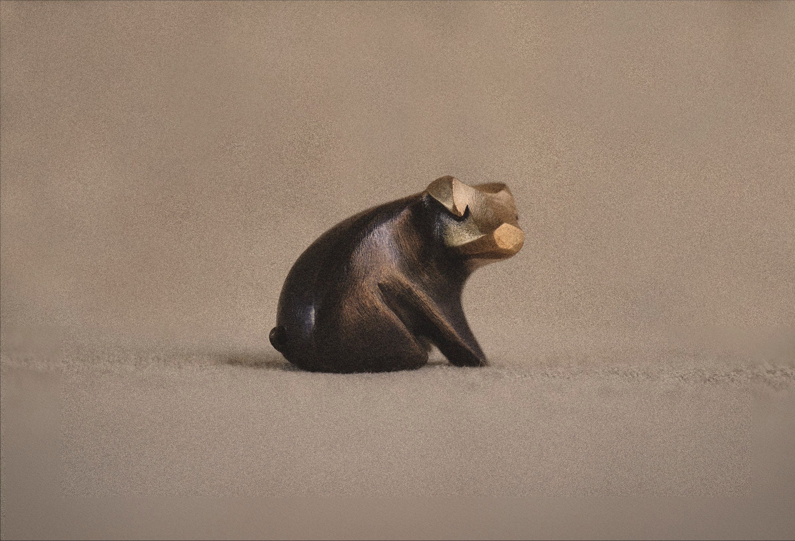
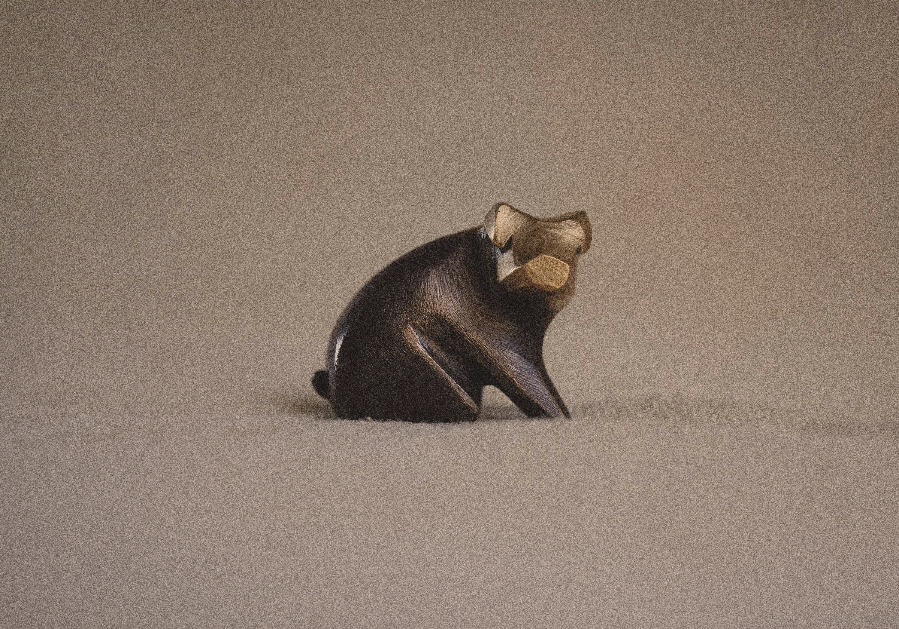
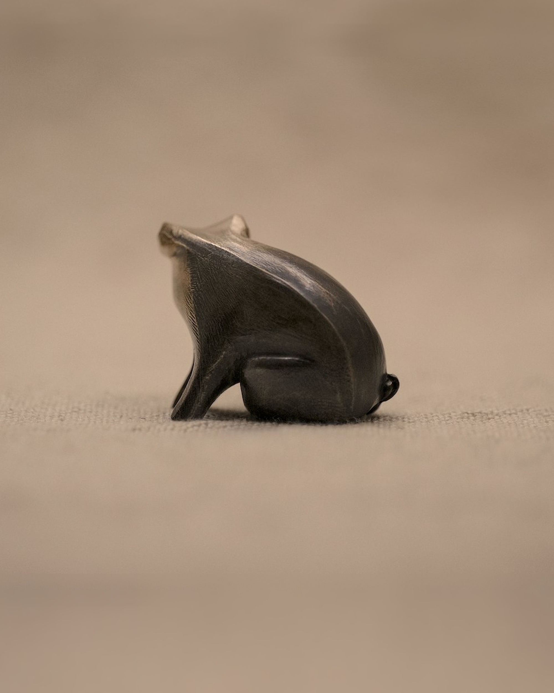
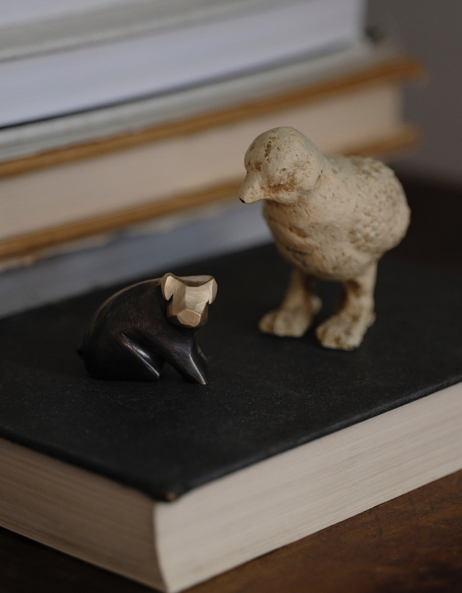
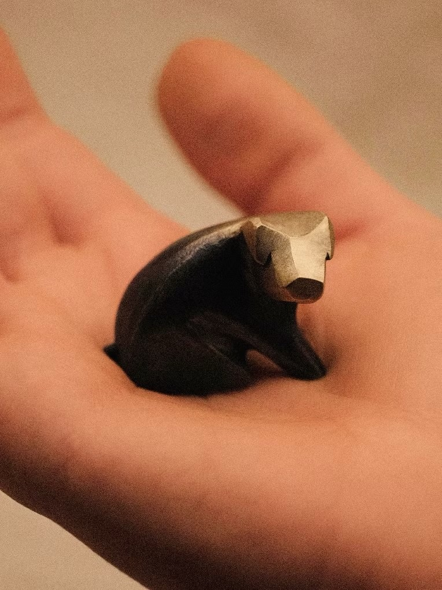
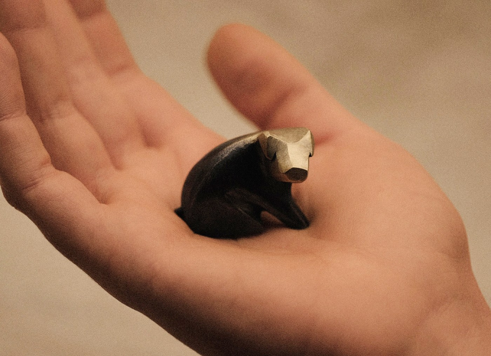

Tiny Keeper of Tenderness
Pip
$220
Description
A tiny keeper of tenderness in solid bronze. Cast from a hand-carved wax original and finished with an ombré patina, Pip is heavier than it looks, and its presence is said to bring unexpected comfort. The patina deepens where the thumb rests, so over time it records exactly how it has been held. Each Pip is poured at a local foundry, then chased, polished and patinated by hand, a slow finish that cannot be hurried without losing the softness of its shape.
Bronze is meant to be handled. The patina darkens where your thumb sits and brightens where it rubs, so over time it records how you hold it.
To keep the surface as it is, wipe it with a soft dry cloth. Avoid polish; it takes the patina with it.
Solid bronze; Ombré patina
- Dimensions
- 29 × 27 × 17 mm
If your piece needs resizing, takes a knock, or needs adjusting, write to hello@studiomacon.co and we'll look after it.
Each piece is made to order. Please allow up to 10 business days for us to make yours before it heads out to you. Standard shipping takes 3–7 business days; international shipping generally takes 5–10.
We accept pieces (excluding custom work) in their original condition for store credit toward your next purchase, within 14 days of delivery. If a piece doesn't fit, we'll gladly work with you to find the right size. Contact us to begin.
Tiny keeper of tenderness. Proximity induces unexpected comfort, and scholars remain blissfully baffled as to why. Kept in a pocket, Pip has been known to settle a racing heart and soften the edges of a long, difficult day.
Every piece is made to order in our studio. Each begins as a sketch, is carved by hand in wax, and is cast at a local foundry before we refine and polish it. Please allow up to two weeks for us to make yours.